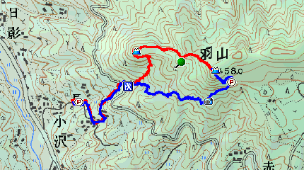

（115x40）
このサイトでは、ハンディGPSで記録したログ（軌跡データ）を、地理院地図の地形図に重ね合わせてホームページに表示する方法を紹介しています。GPSログを表示した地図のことを、本サイトでは「ルート地図」と呼んでいます。地理院地図を用いたルート地図の設置方法を主として扱っていますが、GoogleマップやYahoo!地図を用いたルート地図の設置方法も掲載しています。
このサイトの内容は、GPSからのログの読み込みにカシミール3Dを利用することを前提としています。カシミール3Dで作成したルート地図を、単に画像としてホームページに表示するのではなく、スクロールやズームイン・ズームアウト等の操作が可能なルート地図として表示します。
このサイトでは、ルート地図を作成するためのユーティリティGPX2JSGI（GPX→KMLコンバータ）もフリーソフトウェアとして配布しています。これは、作者のホームページ（あにねこ登山日誌）の山行記録に添えるルート地図を、少ない手間で見栄えよく表示したいという目的で開発しているものです。
このサイトの読者については、ハンディGPSとカシミール3Dの操作方法、および、ホームページ作成、HTML、JavaScriptについての基礎知識があることを想定しています。これらの知識については、必要に応じて他の情報源を参照して下さい。
このサイトと、このサイトで設置方法を説明するルート地図は、以下のブラウザで閲覧した際に（一部の不具合を除き）適切に表示されます。
このサイトの管理人の使用機材は下記のとおりです。主にこの環境で動作確認を行っています。
図1に、様々な方式で設置したルート地図の表示例を示します。図1(a)は、カシミール3Dで作成したルート地図を画像ファイルとして出力し、HTMLのimg要素として表示したものです。トラックの往路を赤、復路を青に色付けし、ウェイポイントにアイコン画像を表示しています。
図1(b)は、ルート地図を構成するGPSデータ（トラック、ウェイポイント）をカシミール3DでGPX形式のファイルとして保存し、GPX2JSGIでKML形式に変換して、地理院地図に重ね合わせたルート地図です。比較のため、表示領域の画素数は図1(a)の画像の画素数に合わせてあります。また、同じKMLファイルをGoogleマップとYahoo!地図にそれぞれ重ね合わせたものが、図1(c)と図1(d)のルート地図です。
図1(b)〜(d)のルート地図では、マウス左ボタンを押しながら地図をドラッグすると、滑らかにスクロールさせることができます。また、(＋)、(−)ボタンをクリックしたり、マウスホイールを回転させると、地図のズームイン、ズームアウトができます。地図上のアイコンをクリックすると小窓がポップアップして、地名や簡単な説明が表示されます。種類の異なる地図や航空写真への切り替えも可能です。
各項目にあるルート地図ボタンをクリックすると、別ウィンドウを開いてルート地図を表示します。ウィンドウの大きさを変えると地図の表示範囲も追従して変化します。地図を見やすい大きさで表示することができ、大変便利です。
図1(b)〜(d)のルート地図は、地図上にGPSログを表示するだけの最も基本的な機能を実装した例です。この他にも、本サイトが取り扱う範囲を超えますが、設定と工夫次第で見栄えを変えたり、様々な機能を追加することができます。
|  | (a) カシミール3D【解説本】2万5千地形図 |
| (b) 地理院地図版ルート地図（解説） ←ページ内表示｜別ウィンドウ表示→ルート地図 |
|
| (c) Googleマップ版ルート地図（解説） ←ページ内表示｜別ウィンドウ表示→ルート地図 |
|
| (d) Yahoo!地図版ルート地図（解説） ←ページ内表示｜別ウィンドウ表示→ルート地図 |
図2は、地理院地図を用いたルート地図を設置するためのデータ処理の概要を示したものです。
以上でルート地図が完成します。Webブラウザで⑤のHTMLファイルにアクセスすると、国土地理院の地図サーバから読み出した背景地図データに上乗せデータを重ね合わせたルート地図が表示されます。
なお、GoogleマップやYahoo!地図を用いる場合も、JavaScriptコードの部分がそれぞれ異なりますが、データ処理の流れは基本的に同じです。
ルート地図の各表示方式をざっくり比較して表1に示します。
| 比較項目 | 画像（img要素） | 地図系Web API | ||
|---|---|---|---|---|
| 地理院地図 | Googleマップ | Yahoo!地図 | ||
| 地図のスクロール | × | ○ | ○ | ○ |
| ズームイン／アウト | × | ○ | ○ | ○ |
| 表示領域のサイズ変更 | × | ○ | ○ | ○ |
| 複数地図の切り替え | × | ○ | ○ | ○ |
| 航空写真への切り替え | × | ○（※1） | ○ | ○ |
| コード記述 | ○簡単 | △やや複雑（※2） | △やや複雑（※2） | △やや複雑（※2） |
| 上乗せデータ形式 | JPG | KML | KML、KMZ | KML |
| データ変換 | ○簡単（ペイント） | △簡単（※3） | △簡単（※3） | △簡単（※3） |
| 利用許諾 | 必要（国土地理院） | 不要 | 不要（※4） | 不要（※4） |
| 特徴 | 単純で簡単 | 地形図が高精細 | 高機能でポピュラー | まだマイナー？ |
※1 山岳地帯の航空写真は未整備。
※2 複雑と言っても、HTMLファイルに定型的なJavaScriptコードを加えるだけです。
※3 GPX2JSGIを使えば簡単。手間はインストールだけです。
※4 APIキー、アプリケーションIDの取得（無料）が必要です。

（115x40）
GPSと地理院地図の利用に関連する情報、活用事例へのリンクです（随時、追加中）。なお、当サイトへのリンクは御自由にどうぞ。リンクの際にもしバナーが必要でしたら、右のリンクバナーをご利用下さい。
| 2018-02-07 | サイトを http://anineco.github.io/gpx2jsgi/index.html に移転。 |
| 2015-03-07 | JSGI2KMLの説明をGPX2JSGIのページに移動。 |
| 2014-11-03 | サイト名を「電子国土Webシステムを利用したGPSログ表示」から改称し、全面的にリニューアル。 GPX2JSGI Ver.1.5を公開。 |
| 2013-12-28 | GPX2JSGI Ver.1.3（地理院地図対応版）を公開。JSGI2KML（JSGI→KMLコンバータ）Ver.1.3も同梱。 地理院地図版ルート地図を追加し、電子国土(Ver.4)版ルート地図を削除。 |
| 2013-05-17 | 電子国土(Ver.4)版ルート地図を追加し、電子国土(Ver.3)版ルート地図を削除。 |
| 2012-01-12 | Yahoo!地図版ルート地図の地図デザインに地形図を追加。 |
| 2011-12-08 | 電子国土版ルート地図の dmap-basic.html と routemap.html のバグ（IE9での表示の不具合）を修正。 |
| 2011-11-11 | 電子国土(Ver.3)版ルート地図を試験公開。 routemap.html と googlemap.html のバグ（IEでの表示の不具合）を修正。 |
| 2011-03-28 | サイトを https://anineco.nyanta.jp/index.html に移転し、全面的にリニューアル。 GPX2JSGI Ver.1.2を公開。 |
| 2010-10-23 | GPX2JSGI Ver.1.1βを公開。 |
| 2010-10-12 | GPX2JSGIに、カシミール3D Ver.8.8.5 に関する注記を追加。 |
| 2010-08-04 | GPX2JSGI Ver.1.0βを公開。 |
| 2009-04-26 | GPX2JSGI Ver.1.0αを公開。 |
| 2009-01-25 | GPX2JSGI Ver.0.9αの公開に合わせて、サイトの構成と内容を全面的に改訂。 |
| 2008-12-13 | ネイティブデータの読み込みに対応するため、routemap.html、routemap_sub.htmlを変更。 |
| 2008-10-08 | リンクバナーを作成。 |
| 2008-10-05 | サポート掲示板を開設。routemap_sub.htmlのバグを修正。 |
| 2008-09-21 | リンク集を作成。 |
| 2008-08-18 | リニューアル公開。 |